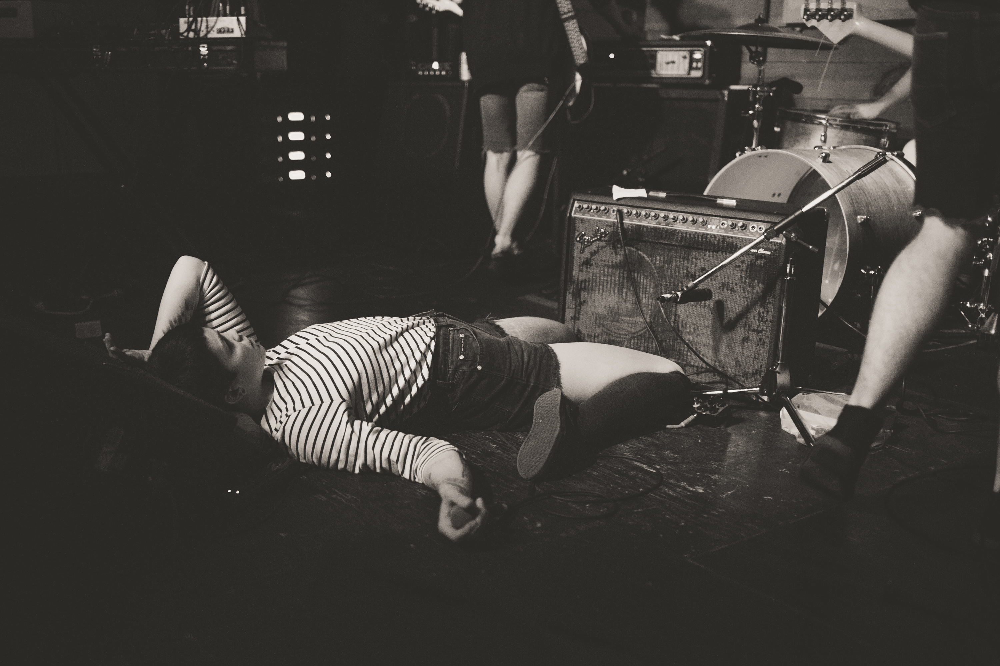
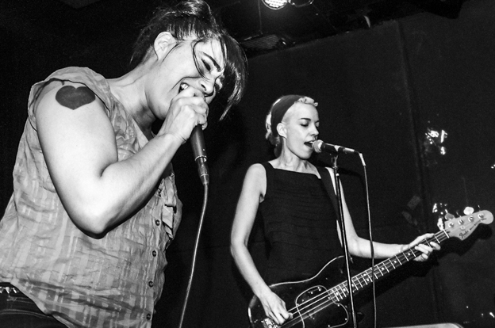

A Minneapolis Music Blog
Interested in contributing? Have some thoughts about a show you saw? Did you take some cool photos at recent gig? Contact us at tips@miniapplemusic.com
A Minneapolis Music Blog
Interested in contributing? Have some thoughts about a show you saw? Did you take some cool photos at recent gig? Contact us at tips@miniapplemusic.com
photos By Kirstie Shanley
Perfect Pussy - 7th Street Entry - April
Perfect Pussy – Photo by Pooneh Ghana
The Julie Ruin - Triple Rock Social Club - July
Photo by Samantha Marble
Sylvan Esso - First Avenue Mainroom - September
The Pretty Reckless - First Avenue Mainroom - October
I just want to mention it, because it happened...and I was thereFAK TWIGS - Fine Line - November
Blood Orange
Image from Doomtree's instagram
I'm not qualified to write this article because I don't know anything about Doomtree, they are not my thing, but I'm not a hater either. I was there, so that probably counts for something. I'll admit it, the on-stage chemistry was magnetic. I liked the part where Lizzo and Har Mar did a cute synchronized dance. I also admired Dessa's new haircut. A friend noted that she forgot how much bros like to hear themselves talk (I don't need reminding of this). After each and every song, the dudes around her would pipe up with "Wow they are really Killin it!" or "That one was the best" or some other affirmation. I don't think this is a crime, nothing wrong with cheering for a band, but I get her annoyance at the constant need to give out stamps of approval when no one asked for one.
Did you know that Surly made a special beer for Doomtree? It's called Doomtree and the people love it.
I stole this photo from the internet.
No. No just play one, goddamnit, I'm looking at you Mason Jennings.
If it was up to me there would be no encores at all. Bands would just play their set and take a bow, THE END. But it's not up to me. So most acts do a predictable and very scheduled encore. The people cheer and go home. When bands take it to the next level and play TWO predictable and very planned encores, I just don't get it.
On the other hand, one time I saw Good Charlotte play, this was like three years ago, not 10 BTW, and they didn't play an encore. Their fans screamed for whole minutes as they waited for them to take their places on stage. Tears were shed. I thought it was kind of a dick move. The people wanted more. And Good Charlotte was just like, "Thanks for your money, peace!" They didn't actually say that, but it sure felt like that.
So cool
Waveless is a cool new band. My friend Hannah is in it, and she is so cool and nice and her bands are always rad. Her last band was Crimes and I really dug them. Ok
Weird huh?
The club we know as First Avenue was born in 1970, but the history of live music in that distinctively curved black building on the corner of First Avenue and Seventh Street rightfully begins much earlier. It was on a February Friday in 1937 that the orchestral music of the Gopher Melody Men played, ribbons were cut, and the new Northland-Greyhound Bus Depot opened for business.
When it was built, the Greyhound Bus Depot was widely acclaimed for its streamlined art deco style and modern luxuries. Called one of the most "modernistic" and beautiful travel centers in America, this bus depot boasted such luxuries as public phones, shower rooms and air conditioning. The décor included huge chromium trimmed chandeliers and a checkered terrazzo floor. Outside, there were blue-glazed bricks with white trimming.